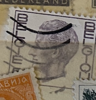
| SOURCE | TITLE| IMAGE MATCH | click to source page |
| royaltyguide.nl | Furstenberg 1800-1899 | 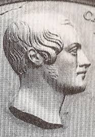 |
| eBay | Greece 1954 stamp Ancient Antique Arts 1200Dr Olive Green - Used | eBay | 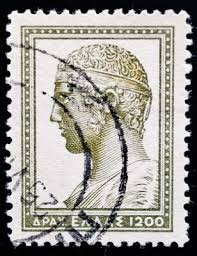 |
| vividagallery.com | David Michelangelo Renaissance Sculpture Italian Artistic Heritage Postage Stamp Throw Pillow by Vivida Gallery - Vivida Gallery | 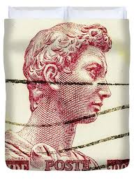 |
| Etsy | France 200 Francs- Excellent Vrai Billet- 200 FRF- Type MONTESQUIEU- Type 1981- F.70.01- Billet Banque France- XX S.- Collection/bonistique - Etsy New Zealand | 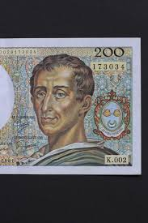 |
| iStock | Postage Stamp Face Of A Young Woman Stock Photo - Download Image Now - Italy, Euro Symbol, European Union Currency - iStock | 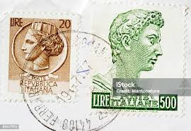 |
| eBay | Vintage Ulster Linen Towel Bank of Britain England Royal Textile Kitchen Art | eBay | 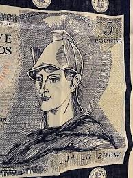 |
| iStock | Italian Postage Stamp Stock Photo - Download Image Now - Adult, Adults Only, Business - iStock | 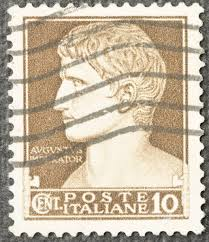 |
| SoundCloud | Stream Loungery Day music | Listen to songs, albums, playlists for free on SoundCloud | 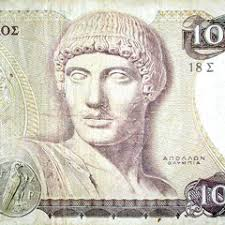 |
| eBay | Art, Artists Used Postage Italian Stamps for sale | eBay | 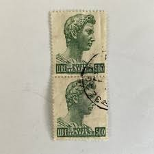 |
| Todocolección | topps bowman draft picks 2009 #132 rc brandon p - Buy Collectible stickers of other sports on todocoleccion | 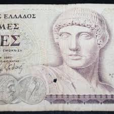 |
| HipStamp | Italy 1957-74 San Giorgio 500 Lire Perf. 14x13 1/4 Used Stamp A22P12F8428 | Europe - Italy, Stamp / HipStamp | 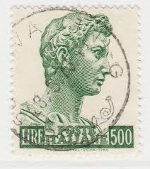 |
| kbcoins.in | Greece republic - 1000 Drachmai 1987 currency note - KB Coins & Currencies | 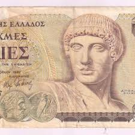 |
| Dreamstime.com | A Stamp Printed by Italy, Shows Sculpture Head St. George, by Donatello Editorial Photo - Image of famous, drawing: 162852686 | 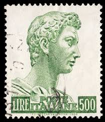 |
| Leftover Currency | 5 Dracme Cassa Mediterranea banknote - Exchange yours for cash today | 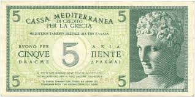 |
| HipStamp | Italy 1957-74 San Giorgio 500 Lire Perf. 14x13 1/4 Used Stamp A22P12F8422 | Europe - Italy, Stamp / HipStamp | 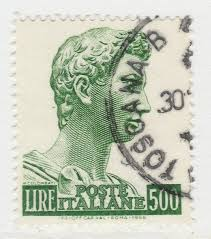 |
| eBay | 1987 Banknote Greek Paper Money for sale | eBay | 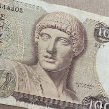 |
| eBay | Apollo the Greek God Currency. Greece 1000 Drachmai Banknote 1987 Last pre-Euro | eBay | 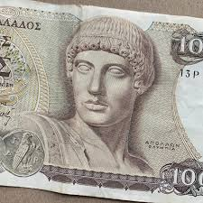 |
| iStock | Greek Postage Stamps Stock Photo - Download Image Now - Above, Antique, Black Background - iStock | 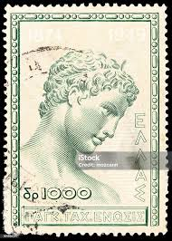 |
| eBay | Apollo the Greek God Currency. Greece 1000 Drachmai Banknote 1987 Last pre-Euro | eBay | 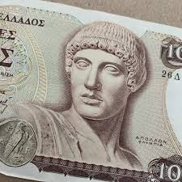 |
| Dreamstime.com | Postage Stamp Italy, 1957, Head of the Statue of St. George Editorial Stock Photo - Image of design, collection: 207546868 | 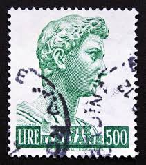 |
| Shutterstock | 200 Yemeni Rial Bank Note Rial Stock Photo 306455339 | Shutterstock | 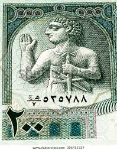 |
| eBay | Paris " Caesars " By Tina Chaden # 1 In a Series of 4 Art Collectibles | eBay | 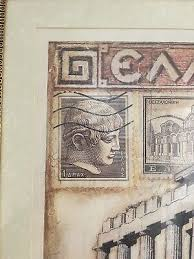 |
| eBay | italy 1955/8 Sc 690A on cover, a230 | eBay | 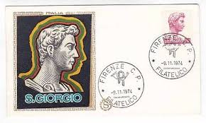 |
| I found these stamps !! : r/stamps | 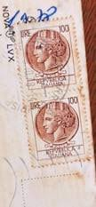 | |
| Shutterstock | 2+ Thousand 多那太罗 Royalty-Free Images, Stock Photos & Pictures | Shutterstock | 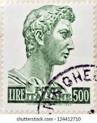 |
| eBay | Poste Italiane Foreign 10c Stamp Used - #A681 | eBay | 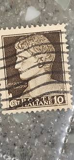 |
| VCoins | France, 1 Franc, PIROT 97.36, 1920, 1920-03-10, PARIS, AU(55-58) | 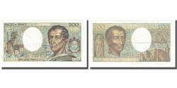 |
| eBay | Head Of Charioteer Of Delphi Stamp | eBay | 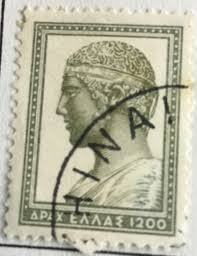 |
| Shutterstock | Greek Postage Stamps: Over 3,341 Royalty-Free Licensable Stock Photos | Shutterstock | 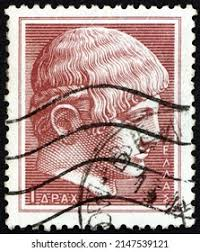 |
| Todocolección | italia ivert 278 (año 1931), 7º centenario de s - Buy Antique stamps of Italy on todocoleccion | 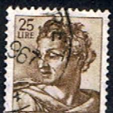 |
| PicClick | ITALY, 25 LIRE, Italian Postage Stamp, Poste Repvbblica Italiana, MH $14.60 - PicClick | 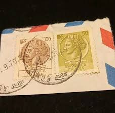 |
| vividagallery.com | David Michelangelo Italian Renaissance Masterpiece Sculpture Postage Stamp Framed Print by Vivida Gallery - Vivida Gallery | 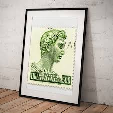 |
| Pngtree | 阿爾巴尼亞人圖庫、照片和背景素材免費下載- Pngtree | 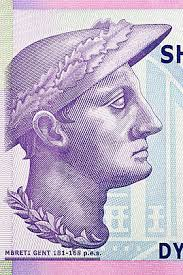 |
| lastdodo.com | Edmondo Pizzi Stamp catalogue - LastDodo | 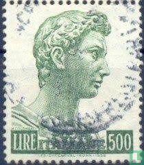 |
| iStock | A Portrait Of Count Ioannis Antonios Kapodistrias John Capodistrias A Greek Statesman Who Served As The Foreign Minister Of The Russian Empire Stock Photo - Download Image Now - iStock | 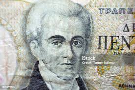 |
| Numista | 50 Drachmai - Greece – Numista | 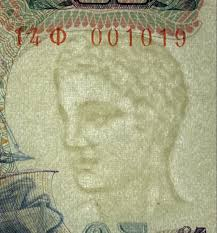 |
| HipStamp | Belgium 758 | Europe - Belgium & Colonies, General Issue Stamp / HipStamp | 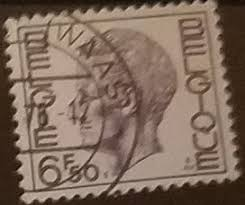 |
| Shutterstock | Greece Circa 1954 Stamp Printed Greece Stock Photo 109384601 | Shutterstock | 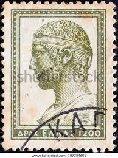 |
| Invaluable.com | Sold at Auction: Lot of International Currency | 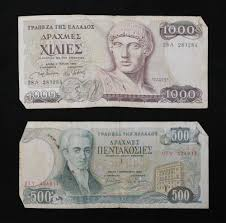 |
| HipStamp | Italy #690 St. George by Donatello; Used | Europe - Italy, General Issue Stamp / HipStamp | 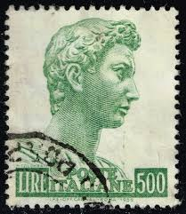 |
| eBay | Italy 150 L Mi.Nr. 1522 As Complete Perforated Sheet With 100 Stamps 1976 | eBay | 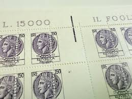 |
| eBay | Greece stamps 1996 Greek Castles Part A full set used | eBay | 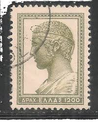 |
| Shutterstock | Goddess Demeter On Old Greece 10 Stock Photo 1600285450 | Shutterstock | 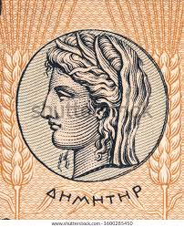 |
| Alamy | 1957 postage stamp hi-res stock photography and images - Alamy | 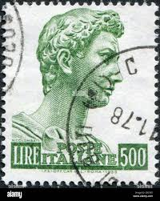 |
| eBay | 12 Vintage Cancelled Postage Stamps ITALY 1957 St. George by Donatello | eBay | 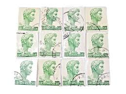 |
| ProBoards | Greece : Stamps | The Stamp Forum (TSF) | 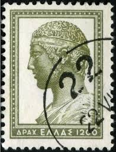 |
| pixels.com | David Michelangelo Italian Renaissance Masterpiece Sculpture Postage Stamp Zip Pouch by Vivida Gallery - Pixels | 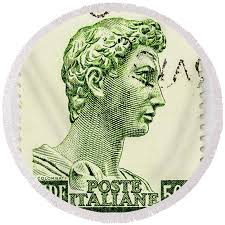 |
| ProBoards | Italy perfins | The Stamp Forum (TSF) | 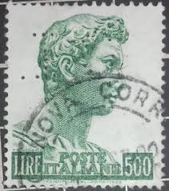 |
| VCoins | France, 500 Francs, Pascal, 1974, V.43, EF(40-45), Fayette:71.11, KM:156b | 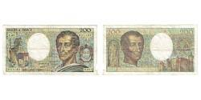 |
| eBay UK | In Italy World War II (1939-45) Era Collectable Topographical Postcards for sale | eBay UK | |
| iStock | Greek Postage Stamp Stock Photo - Download Image Now - Antique, Black Background, Black Color - iStock | |
| pv-griekenland.nl | LHH Dies Proofs | |
| eBay | France 300 Francs P87 1938 Extremely Fine French Currency BEAUTIFUL RARE | eBay | |
| vividagallery.com | Italian Donatello San Giorgio Stamp Male Profile Green 500 Lire 1956 Italy Duvet Cover by Vivida Gallery - Vivida Gallery | |
| Alamy | Japanese currency detail hi-res stock photography and images - Alamy | |
| eBay | Vintage Postcard, VERONA, ITALY, 1972, "Greetings From", Stadium, To Brockton,MA | eBay | |
| worldbanknotescoins.com | World Banknotes & Coins Pictures | Old Money, Foreign Currency Notes, World Paper Money Museum: GREECE Paper Money - Cassa Meditteraranea 5 Drachmai 1941 issue | |
| Bob Shop | Italy - 1968 Italia - Coin of Syracuse 50, 100, 200 L used, stamped on postal item was listed for 3.60 on 5 Jul at 15:32 by KHB56 in Johannesburg (ID:644984169) | |
| eBay | Italy SC 690 MNH (7gfq) | eBay | |
| vividagallery.com | Italy Turrita Siracusana Forest Green Portrait Definitive Stamp Youth T-Shirt by Vivida Gallery - Vivida Gallery |